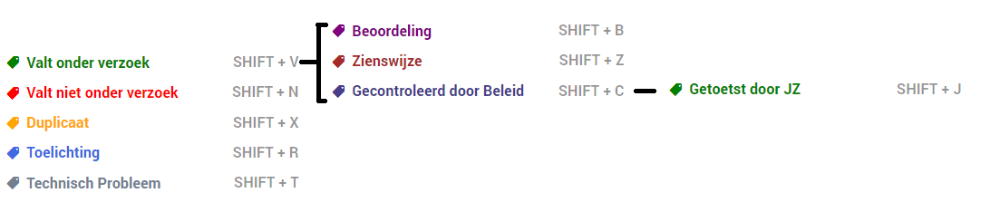
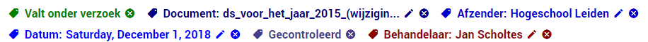
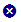

Om de status van documenten bij te houden, raadt ZyLAB aan om gebruik te maken van labels. Door het toekennen van een of meerdere labels aan een document wordt op snelle en eenvoudige wijze een overzicht gemaakt van het procesverloop. Deze informatie kan ook gebruikt worden om de inventarislijst te verrijken met informatie per document.
De labels in ZyLAB ONE zijn specifiek toegespitst op de Woo. Als u alle labels doorloopt is een document geheel beoordeeld. In onderstaande paragrafen worden alle beschikbare labels toegelicht. Daarnaast is het ook mogelijk om zelf labels aan te maken mocht u dit als organisatie interessant vinden. Sommige labels kunnen pas toegewezen worden wanneer een ander label aan het document is toegevoegd. Hierdoor is het alleen mogelijk om bepaalde informatie aan een document toe te voegen door middel van een label wanneer dit ook nodig is.
Momenteel zijn de labels op de volgende wijze aan elkaar verbonden:

Wanneer u een label toewijst komt dit boven het document in het Bewerkingsdashboard te staan.

U kunt het kruisje achter elk label gebruiken om een label weer te verwijderen.
Indien u de inhoud van een label wilt aanpassen klikt u op het potlood icoon.